# remotes::install_github("padpadpadpad/rTPC") ## to install rTPCNon-Linear Least Squares (NLLS) and Thermal Performance Curve Fitting with Bootstrapping
Fitting nonlinear models; TPCs
We will use the following packages:
require('rTPC')
require('minpack.lm')
require('nls.multstart')
require('broom')
require('tidyverse')
require('data.table')
require('car')
require('boot')
require('patchwork')NLLS
Welcome to the VectorBiTE 2021 section on Non-linear Least-squares (NLLS)
This section will cover: * Model Fitting using Non-linear Least-squares * Bootstrapping using the rTPC package
Model Fitting using Non-linear Least-squares
Introduction
In this section, you will learn to fit non-linear mathematical models to data using Non-Linear Least Squares (NLLS).
Specifically, you will learn to
- Visualize the data and the mathematical model you want to fit to them
- Fit a non-linear model
- Assess the quality of the fit, and whether the model is appropriate for your data
This section assumes that you have at least a conceptual understanding of what Linear vs Non-linear models are, how they are fitted to data, and how the fits can be assessed statistically.
We will use R. For starters, clear all variables and graphic devices and load necessary packages:
rm(list = ls())
graphics.off()Traits data as an example
Our first set of examples will focus on traits.
A trait is any measurable feature of an individual organism. This includes physical traits (e.g., morphology, body mass, wing length), performance traits (e.g., biochemical kinetics, respiration rate, body velocity, fecundity), and behavioral traits (e.g., feeding preference, foraging strategy, mate choice). All natural populations show variation in traits across individuals. A trait is functional when it directly (e.g., mortality rate) or indirectly (e.g., somatic development or growth rate) determines individual fitness. Therefore, variation in (functional) traits can generate variation in the rate of increase and persistence of populations. When measured in the context of life cycles, without considering interactions with other organisms (e.g., predators or prey of the focal population), functional traits are typically called life history traits (such as mortality rate and fecundity). Other traits determine interactions both within the focal population (e.g., intra-specific interference or mating frequency) and between the focal population/species and others, including the species which may act as resources (prey, for example). Thus both life history and interaction traits determine population fitness and therefore abundance, which ultimately influences dynamics and functioning of the wider ecosystem, such as carbon fixation rate or disease transmission rate.
Biochemical Kinetics
The properties of an organism’s metabolic pathways, and the underlying (enzyme-mediated) biochemical reactions (kinetics) are arguably its most fundamental “traits”, because these drive all “performance” traits, from photosynthesis and respiration, to movement and growth rate.
The Michaelis-Menten model is widely used to quantify reaction kinetics data and estimate key biochemical parameters. This model relates biochemical reaction rate (V) (rate of formation of the product of the reaction), to concentration of the substrate (S):
V = \frac{V_{\max} S}{K_M + S}
Here,
- V_{\max} is the maximum rate that can be achieved in the reaction system, which happens at saturating substrate concentration, and
- K_M is the Michaelis or half-saturation constant, defined as the substrate concentration at which the reaction rate is half of V_{\max }.
Biochemical reactions involving a single substrate are often well fitted by the Michaelis-Menten kinetics, suggesting that its assumptions are often valid.

Let’s fit the Michaelis-Menten model to some data.
Generating data
Instead of using real experimental data, we will actually generate some “data” because that way we know exactly what the errors in the data are. You can also import and use your own dataset for the fitting steps further below.
We can generate some data as follows:
S_data <- seq(1,50,1) # Generate a sequence of substrate concentrations
S_data [1] 1 2 3 4 5 6 7 8 9 10 11 12 13 14 15 16 17 18 19 20 21 22 23 24 25
[26] 26 27 28 29 30 31 32 33 34 35 36 37 38 39 40 41 42 43 44 45 46 47 48 49 50V_data <- ((12.5 * S_data)/(7.1 + S_data)) # Generate a Michaelis-Menten response with V_max = 12.5 and K_M = 7.1
plot(S_data, V_data)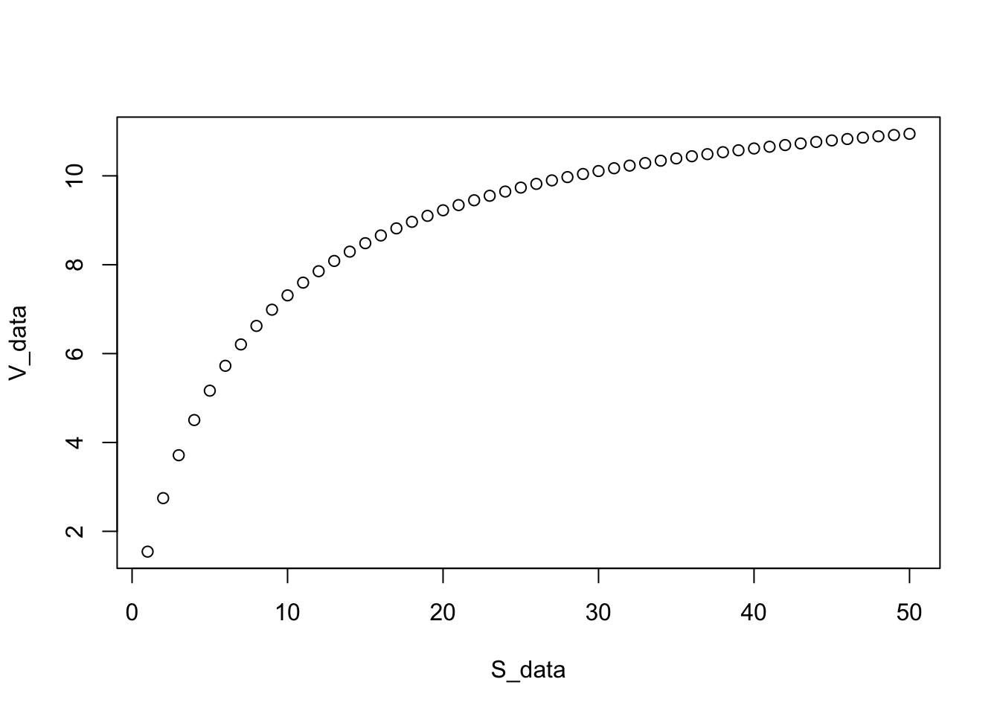
Note that our choice of V_{\max} = 12.5 and K_M = 7.1 is completely arbitrary. As long as we make sure that V_{\max} > 0, K_H > 0, and K_M lies well within the lower half of the the range of substrate concentrations (0-50), these “data” will be physically biologically sensible.
Now let’s add some random (normally-distributed) fluctuations to the data to emulate experimental / measurement error:
set.seed(1456) # To get the same random fluctuations in the "data" every time
V_data <- V_data + rnorm(50,0,1) # Add random fluctuations to emulate error with standard deviation of 0.5
plot(S_data, V_data)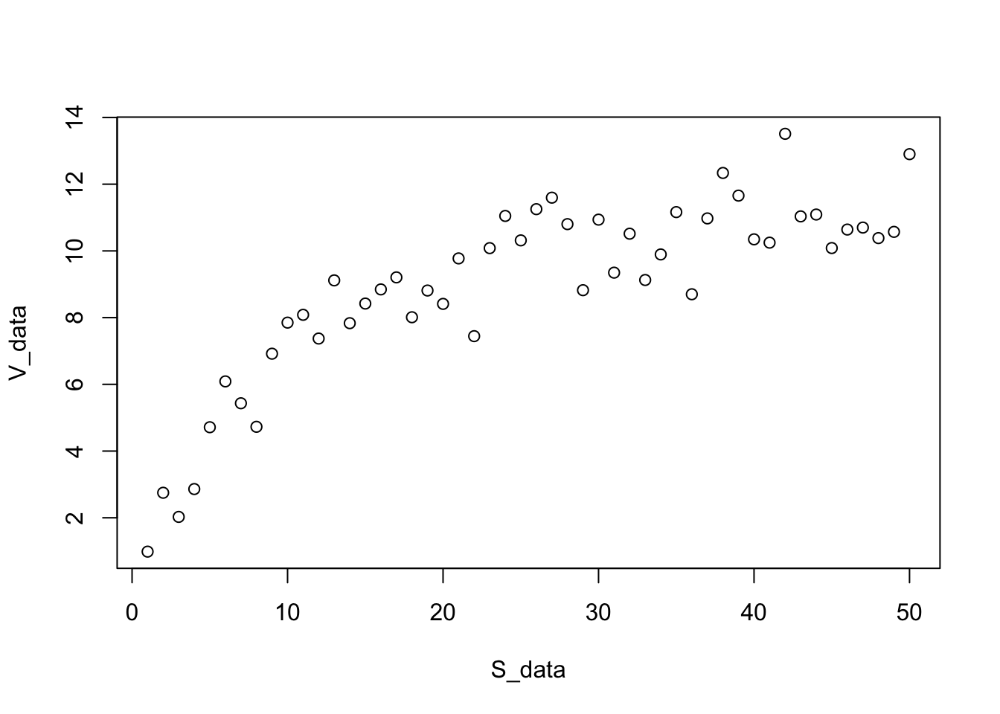
That looks real!
Fitting the model
Now, fit the model to the data:
MM_model <- nls(V_data ~ V_max * S_data / (K_M + S_data))Warning in nls(V_data ~ V_max * S_data/(K_M + S_data)): No starting values specified for some parameters.
Initializing 'V_max', 'K_M' to '1.'.
Consider specifying 'start' or using a selfStart modelThis warning arises because nls requires “starting values” for the parameters (two in this case: V_max and K_M) to start searching for optimal combinations of parameter values (ones that minimize the RSS). Indeed, all NLLS fitting functions / algorithms require this. If you do not provide starting values, nls gives you a warning (as above) and uses a starting value of 1 for every parameter by default. For simple models, despite the warning, this works well enough.
Before proceeding further, have a look at what `nls()`'s arguments are using `?nls`, or looking at the documentation [online](https://www.rdocumentation.org/packages/stats/versions/3.6.2/topics/nls).We will address the issue of starting values soon enough, but first let’s look at how good the fit that we obtained looks. The first thing to do is to see how well the model fitted the data, for which plotting is the best first option:
plot(S_data,V_data, xlab = "Substrate Concentration", ylab = "Reaction Rate") # first plot the data
lines(S_data,predict(MM_model),lty=1,col="blue",lwd=2) # now overlay the fitted model 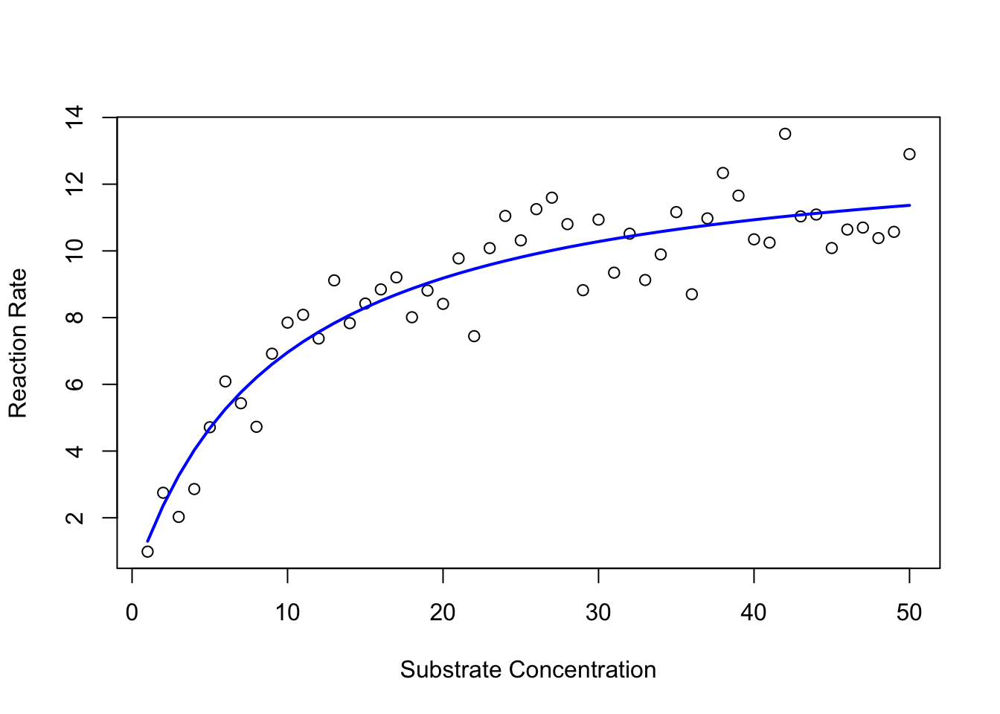
This looks pretty good.
Note that we used we used the predict() function here just as we did in any of the linear models sections.
In general, you can use most of the same commands/functions (e.g., `predict()` and `summary()`) on the output of a `nls()` model fitting object as you would on a `lm()` model fitting object.Now lets get some stats of this NLLS fit. Having obtained the fit object (MM_model), we can use summary() just like we would for a lm() fit object:
summary(MM_model)
Formula: V_data ~ V_max * S_data/(K_M + S_data)
Parameters:
Estimate Std. Error t value Pr(>|t|)
V_max 13.5041 0.5345 25.265 < 2e-16 ***
K_M 9.4085 1.3198 7.128 4.67e-09 ***
---
Signif. codes: 0 '***' 0.001 '**' 0.01 '*' 0.05 '.' 0.1 ' ' 1
Residual standard error: 1.001 on 48 degrees of freedom
Number of iterations to convergence: 7
Achieved convergence tolerance: 1.948e-06This looks a lot like the output of a linear model, and to be specific, of a Linear Regression. For starters, compare the above output with the output of summary(genomeSizeModelDragon) the linear regression section.
So here are the main things to note about the output of summary() of an nls() model object:
Estimates are, as in the output of thelm()function for fitting linear models, the estimated values of the coefficients of the model that you fitted (V_(\max) and K_M). Note that although we generated our data using V_{\max} = 12.5 and K_M = 7.1, the actual coefficients are quite different from what we are getting with the NLLS fitting ( \hat{V_{\max} = 13.5 and \hat{K}_M = 9.4). This is because we introduced random (normally-distributed) errors. This tell you something about how experimental and/or measurement errors can distort your image of the underlying mechanism or process.
Std. Error,t value, andPr(>|t|)andResidual standard errorhave the same interpretation as in the output oflm()(please look back at the Linear Regression section)Number of iterations to convergencetells you how many times the NLLS algorithm had to adjust the parameter values till it managed to find a solution that minimizes the Residual Sum of Squares (RSS)Achieved convergence tolerancetells you on what basis the algorithm decided that it was close enough to the a solution; basically if the RSS does not improve more than a certain threshold despite parameter adjustments, the algorithm stops searching. This may or may not be close to an optimal solution (but in this case it is).
The last two items are specific to the output of an nls() fitting summary(), because unlike Ordinary Least Squares (OLS), which is what we used for Linear regression, NLLS is not an exact procedure, and the fitting requires computer simulations. As such, you do not need to report these last two items when presenting the results of an NLLS fit, but they are useful for problem solving in case the fitting does not work (more on this below).
As noted above, you can use the same sort of commands on a nls() fitting result as you can on a lm() object.
For example, you can get just the values of the estimated coefficients using:
coef(MM_model) V_max K_M
13.504118 9.408462 Thus, much of the output of NLLS fitting using nls() is analogous to the output of an lm(). However, further statistical inference here cannot be done using Analysis of Variance (ANOVA), because the model is not a Linear Model. Try anova(MM_model), and see what happens. We will address statistical inference with NLLS model fitting further below (with a different example).
Confidence Intervals
One particularly useful thing you can do after NLLS fitting is to calculate/construct the confidence intervals (CI’s) around the estimated parameters in our fitted model, analogous to how we would in the OLS fitting used for Linear Models:
confint(MM_model)Waiting for profiling to be done... 2.5% 97.5%
V_max 12.538677 14.66093
K_M 7.124685 12.36158The Waiting for profiling to be done... message reflects the fact that calculating the standard errors from which the CI’s are calculated requires a particular computational procedure (which we will not go into here) when it comes to NLLS fits. Calculating confidence intervals can be useful because you can use a coefficient/parameter estimate’s confidence intervals to test whether it is significantly different from some reference value. Note that the intervals for K_M do not include the original value of K_M = 7.1 that we used to generate the data!.
Also, the intervals should not include zero for the coefficient to be statistically significant in itself, that is, different from zero.
R-squared values
To put it simply, unlike an R^2 value obtained by fitting a linear model, that obtained from NLLS fitting is not reliable, and should not be used. The reason for this is somewhat technical (e.g., see this paper) and we won’t go into it here. But basically, NLLS R^2 values do not always accurately reflect the quality of fit, and definitely cannot be used to select between competing models. Indeed R^2 values obtained from NLLS fitting even be negative when the model fits very poorly! We will learn more about model selection with non-linear models later below.
The starting values problem
Now let’s revisit the issue of starting values in NLLS fitting. Previously, we fitted the Michaelis-Menten Model without any starting values, and R gave us a warning but managed to fit the model to our synthetic “data” using default starting values.
Lets try the NLLS fitting again, but with some particular starting values:
MM_model2 <- nls(V_data ~ V_max * S_data / (K_M + S_data), start = list(V_max = 2, K_M = 2))Note that unlike before, we got no warning message about starting values.
Let’s compare the coefficient estimates from our two different model fits to the same dataset:
coef(MM_model) V_max K_M
13.504118 9.408462 coef(MM_model2) V_max K_M
13.504105 9.408426 Not too different, but not exactly the same!
In contrast, when you fit linear models you will get exactly the same coefficient estimates every single time, because OLS is an exact procedure.
Now, let’s try even more different start values:
MM_model3 <- nls(V_data ~ V_max * S_data / (K_M + S_data), start = list(V_max = .01, K_M = 10))Compare the coefficients of this model fit to the two previous ones:
coef(MM_model) V_max K_M
13.504118 9.408462 coef(MM_model2) V_max K_M
13.504105 9.408426 coef(MM_model3) V_max K_M
2.956160 -3.474732 The estimates in our latest model fit are completely different (in fact, K_M is negative)! Let’s plot this model’s and the first model’s fit together:
plot(S_data,V_data) # first plot the data
lines(S_data,predict(MM_model),lty=1,col="blue",lwd=2) # overlay the original model fit
lines(S_data,predict(MM_model3),lty=1,col="red",lwd=2) # overlay the latest model fit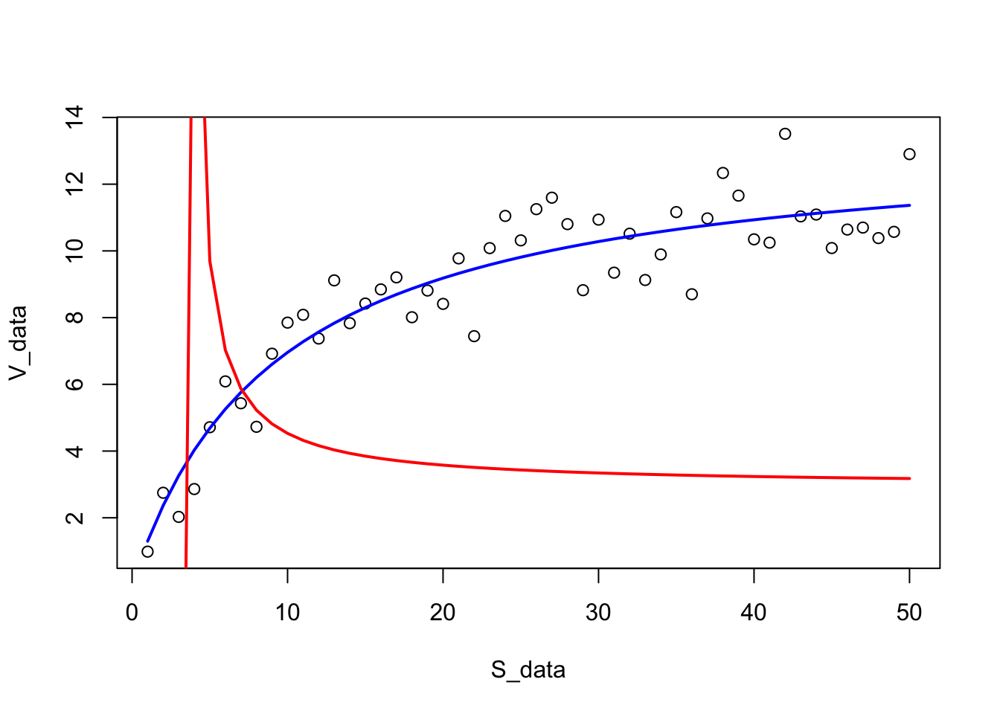
As you would have guessed from the really funky coefficient estimates that were obtained in MM_model3, this is a pretty poor model fit to the data, with the negative value of K_M causing the fitted version of the Michaelis-Menten model to behave strangely.
Let’s try with even more different starting values.
nls(V_data ~ V_max * S_data / (K_M + S_data),
start = list(V_max = 0, K_M = 0.1))Try putting a zero for the starting V_max value. You’ll get an error. The singular gradient matrix at initial parameter estimates error arises from the fact that the starting values you provided were so far from the optimal solution, that the parameter searching in nls() failed at the very first step. The algorithm could not figure out where to go from those starting values. In fact, the starting value we gave it is biologically/ physically impossible, because V_max can’t really equal 0.
Let’s look at some more starting values that can cause the model fitting to fail:
nls(V_data ~ V_max * S_data / (K_M + S_data), start = list(V_max = 0.1, K_M = 100))nls(V_data ~ V_max * S_data / (K_M + S_data), start = list(V_max = -0.1, K_M = 100))In both the above cases, the model fitting was able to start, but eventually failed because the starting values were too far from the (approximately) optimal values (V_{\max} \approx 13.5, K_M \approx 9.4).
And what happens if we start really close to the optimal values? Let’s try:
MM_model4 <- nls(V_data ~ V_max * S_data / (K_M + S_data), start = list(V_max = 13.5, K_M = 9.4))coef(MM_model) V_max K_M
13.504118 9.408462 coef(MM_model4) V_max K_M
13.504102 9.408419 The results of the first model fit and this last one are still not exactly the same! This drives home the point that NLLS is not an “exact” procedure. However, the differences between these two solutions are minuscule, so the main thing to take away is that if the starting values are reasonable, NLLS is exact enough.
Note that and even if you started the NLLS fitting with the exact parameter values with which you generated the data before introducing errors (so use start = list(V_max = 12.5, K_M = 7.1) above instead), you would still get the same result for the coefficients (try it). This is because the NLLS fitting will converge back to the parameter estimates based on the actual data, errors and all.
A more robust NLLS algorithm
The standard NLLS function in R, nls, which we have been using so far, does the NLLS fitting by implementing an algorithm called the Gauss-Newton algorithm. While the Gauss-Newton algorithm works well for most simple non-linear models, it has a tendency to “get lost” or “stuck” while searching for optimal parameter estimates (that minimize the residual sum of squares, or RSS). Therefore, nls will often fail to fit your model to the data if you start off at starting values for the parameters that are too far from what the optimal values would be, as you saw above (e.g., when you got the singular gradient matrix error).
Some nonlinear models are especially difficult for nls to fit to data because such model have a mathematical form that makes it hard to find parameter combinations that minimize the residual sum of squared (RSS). If this does not makes sense, don’t worry about it.
One solution to this is to use a different algorithm than Gauss-Newton. nls() has one other algorithm that can be more robust in some situations, called the “port” algorithm. However, there is a better solution still: the Levenberg-Marqualdt algorithm, which is less likely to get stuck (is more robust than) than Gauss-Newton (or port). If you want to learn more about the technicalities of this, here are here are good places to start (also see the Readings list at the end of this section).
To be able to use nlsLM, we will need to switch to a different NLLS function called nlsLM. In order to be able to use nlsLM, you will need the nls.lm R package, which you can install using the method appropriate for your operating system (e.g., linux users will launch R in sudo mode first) and then use:
Now let’s use the minpack.lm package:
Let’s try it (using the same starting values as MM_model2 above):
MM_model5 <- nlsLM(V_data ~ V_max * S_data / (K_M + S_data), start = list(V_max = 2, K_M = 2))Now compare the nls and nlsLM fitted coefficients:
coef(MM_model2) V_max K_M
13.504105 9.408426 coef(MM_model5) V_max K_M
13.504116 9.408456 Close enough.
Now, let’s try fitting the model using all those starting parameter combinations that failed previously:
MM_model6 <- nlsLM(V_data ~ V_max * S_data / (K_M + S_data), start = list(V_max = 1, K_M = 10))MM_model7 <- nlsLM(V_data ~ V_max * S_data / (K_M + S_data), start = list(V_max = 0, K_M = 0.1))MM_model8 <- nlsLM(V_data ~ V_max * S_data / (K_M + S_data), start = list(V_max = 0.1, K_M = 100))MM_model9 <- nlsLM(V_data ~ V_max * S_data / (K_M + S_data), start = list(V_max = -0.1, K_M = 100))coef(MM_model2) V_max K_M
13.504105 9.408426 coef(MM_model5) V_max K_M
13.504116 9.408456 coef(MM_model6) V_max K_M
13.504119 9.408464 coef(MM_model7) V_max K_M
6.235507 -1.392507 coef(MM_model8) V_max K_M
13.504126 9.408482 coef(MM_model9) V_max K_M
13.504115 9.408453 Nice, these all worked with nlsLM even though they had failed with nls! But one of them (model 7) still gives you poor values for the coefficients.
But nlsLM also has its limits. Let’s try more absurd starting values:
nlsLM(V_data ~ V_max * S_data / (K_M + S_data), start = list(V_max = -10, K_M = -10))Thus, using starting values that are in a sensible range is always a good idea. Here, we know that neither V_{\max} nor K_M can be negative, so we can use that bit of information to assign reasonable starting values.
*How do you find "sensible" starting values for NLLS fitting?* This very much depends on your understanding of the mathematical model that is being fitted to the data, and the mechanistic interpretation of its parameters. Bounding parameter values
You can also bound the starting values, i.e., prevent them from exceeding some minimum and maximum value during the NLLS fitting process:
nlsLM(V_data ~ V_max * S_data / (K_M + S_data), start = list(V_max = 0.5, K_M = 0.5))Nonlinear regression model
model: V_data ~ V_max * S_data/(K_M + S_data)
data: parent.frame()
V_max K_M
13.504 9.408
residual sum-of-squares: 48.06
Number of iterations to convergence: 9
Achieved convergence tolerance: 1.49e-08nlsLM(V_data ~ V_max * S_data / (K_M + S_data), start = list(V_max = 0.5, K_M = 0.5), lower=c(0.4,0.4), upper=c(100,100))Nonlinear regression model
model: V_data ~ V_max * S_data/(K_M + S_data)
data: parent.frame()
V_max K_M
13.504 9.408
residual sum-of-squares: 48.06
Number of iterations to convergence: 8
Achieved convergence tolerance: 1.49e-08So the solution was found in one lesser iteration (not a spectacular improvement, but an improvement nevertheless).
However, if you bound the parameters too much (to excessively narrow ranges), the algorithm cannot search sufficient parameter space (combinations of parameters), and will fail to converge on a good solution. For example:
nlsLM(V_data ~ V_max * S_data / (K_M + S_data), start = list(V_max = 0.5, K_M = 0.5), lower=c(0.4,0.4), upper=c(20,20))Nonlinear regression model
model: V_data ~ V_max * S_data/(K_M + S_data)
data: parent.frame()
V_max K_M
17.21 20.00
residual sum-of-squares: 78.58
Number of iterations to convergence: 3
Achieved convergence tolerance: 1.49e-08Here the algorithm converged on a poor solution, and in fact took fewer iterations (3) than before to do so. This is because it could not explore sufficient parameter combinations of V_max and K_M as we have narrowed the range that both these parameters could be allowed to take during the optimization too much.
Diagnostics of an NLLS fit
NLLS regression carries the same three key assumptions as Linear models:
No (in practice, minimal) measurement error in explanatory/independent/predictor variable (x-axis variable)
Data have constant normal variance — errors in the y-axis are homogeneously distributed over the x-axis range
The measurement/observation errors are Normally distributed (Gaussian)
At the very least, it is a good idea to plot the residuals of a fitted NLLS model. Let’s do that for our Michaelis-Menten Model fit:
hist(residuals(MM_model6))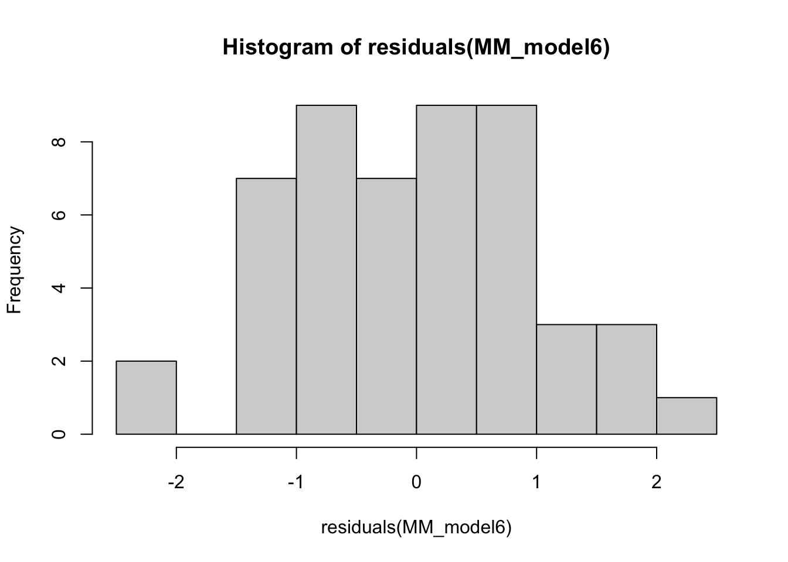
The residuals look OK. But this should not come as a surprise because we generated these “data” ourselves using normally-distributed errors!
Abundance data as an example
Fluctuations in the abundance (density) of single populations may play a crucial role in ecosystem dynamics and emergent functional characteristics, such as rates of carbon fixation or disease transmission. For example, if vector population densities or their traits change at the same or shorter timescales than the rate of disease transmission, then (vector) abundance fluctuations can cause significant fluctuations in disease transmission rates. Indeed, most disease vectors are small ectotherms with short generation times and greater sensitivity to environmental conditions than their (invariably larger, longer-lived, and often, endothermic) hosts. So understanding how populations vary over time, space, and with respect to environmental variables such as temperature and precipitation is key. We will look at fitting models to the growth of a single population here.
Population growth rates
A population grows exponentially while its abundance is low and resources are not limiting (the Malthusian principle). This growth then slows and eventually stops as resources become limiting. There may also be a time lag before the population growth really takes off at the start. We will focus on microbial (specifically, bacterial) growth rates. Bacterial growth in batch culture follows a distinct set of phases; lag phase, exponential phase and stationary phase. During the lag phase a suite of transcriptional machinery is activated, including genes involved in nutrient uptake and metabolic changes, as bacteria prepare for growth. During the exponential growth phase, bacteria divide at a constant rate, the population doubling with each generation. When the carrying capacity of the media is reached, growth slows and the number of cells in the culture stabilizes, beginning the stationary phase.
Traditionally, microbial growth rates were measured by plotting cell numbers or culture density against time on a semi-log graph and fitting a straight line through the exponential growth phase – the slope of the line gives the maximum growth rate (r_{max}). Models have since been developed which we can use to describe the whole sigmoidal bacterial growth curve (e.g., using NLLS). Here we will take a look at these different approaches, from applying linear models to the exponential phase, through to fitting non-linear models to the full growth curve.
Let’s first generate some “data” on the number of bacterial cells as a function of time that we can play with:
t <- seq(0, 22, 2)
N <- c(32500, 33000, 38000, 105000, 445000, 1430000, 3020000, 4720000, 5670000, 5870000, 5930000, 5940000)
set.seed(1234) # set seed to ensure you always get the same random sequence
data <- data.frame(t, N * (1 + rnorm(length(t), sd = 0.1))) # add some random error
names(data) <- c("Time", "N")
head(data) Time N
1 0 28577.04
2 2 33915.52
3 4 42120.88
4 6 80370.17
5 8 464096.05
6 10 1502365.99Note how we added some random “sampling” error using N * (1 + rnorm(length(t), sd = .1)).
This means that we are adding an error at each time point t (let’s call this fluctuation \epsilon_t) as a * percentage * of the population (N_t) at that time point in a vectorized way. That is, we are performing the operation N_t \times (1 + \epsilon_t) at all time points at one go. This is important to note because this is often the way that errors appear – proportional to the value being measured.
Now let’s plot these data:
ggplot(data, aes(x = Time, y = N)) +
geom_point(size = 3) +
labs(x = "Time (Hours)", y = "Population size (cells)")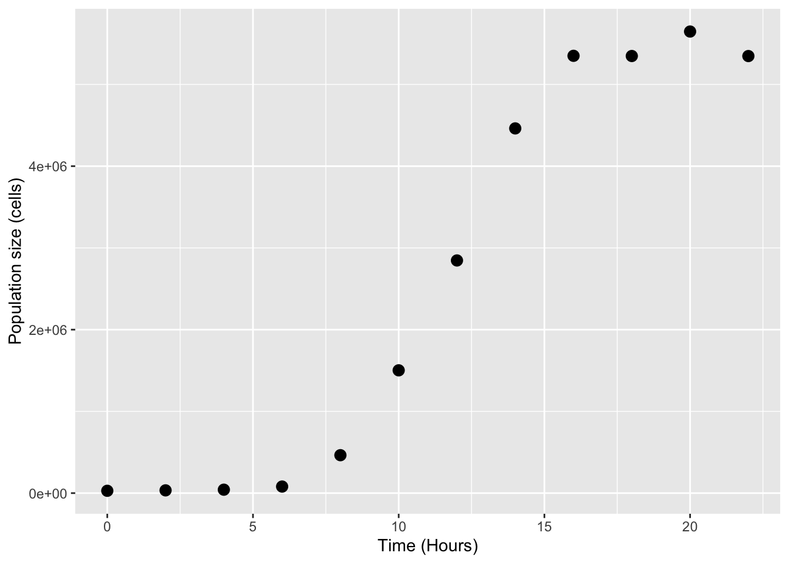
Basic approach
The size of an exponentially growing population (N) at any given time (t) is given by:
$ N(t) = N_0 e^{rt}$
where N_0 is the initial population size and r is the growth rate. We can re-arrange this to give:
r = \frac{\log(N(t)) - \log(N_0)}{t}
That is, in exponential growth at a constant rate, the growth rate can be simply calculated as the difference in the log of two population sizes, over time. We will log-transform the data and estimate by eye where growth looks exponential.
data$LogN <- log(data$N)
# visualise
ggplot(data, aes(x = t, y = LogN)) +
geom_point(size = 3) +
labs(x = "Time (Hours)", y = "log(cell number)")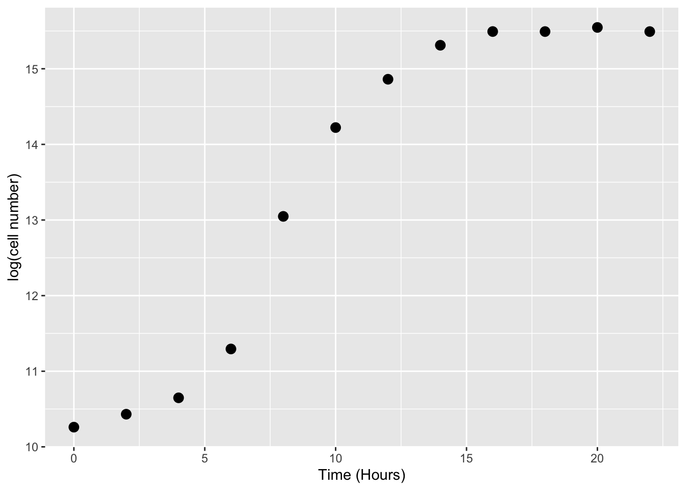
By eye the logged data looks fairly linear (beyond the initial “lag phase” of growth; see below) between hours 5 and 10, so we’ll use that time-period to calculate the growth rate.
(data[data$Time == 10,]$LogN - data[data$Time == 6,]$LogN)/(10-6)[1] 0.7320383This is our first, most basic estimate of r.
Or, we can decide not to eyeball the data, but just pick the maximum observed gradient of the curve. For this, we can use the the diff() function:
diff(data$LogN) [1] 0.171269154 0.216670872 0.646099643 1.753448393 1.174704941
[6] 0.639023868 0.449529740 0.181493482 -0.000450184 0.054490710
[11] -0.054600924This gives all the (log) population size differences between successive timepoint pairs. The max of this is what we want, divided by the time-step.
max(diff(data$LogN))/2 # 2 is the difference in any successive pair of timepoints[1] 0.8767242Using OLS
But we can do better than this. To account for some error in measurement, we shouldn’t really take the data points directly, but fit a linear model through them instead, where the slope gives our growth rate. This is pretty much the “traditional” way of calculating microbial growth rates – draw a straight line through the linear part of the log-transformed data.
lm_growth <- lm(LogN ~ Time, data = data[data$Time > 2 & data$Time < 12,])
summary(lm_growth)
Call:
lm(formula = LogN ~ Time, data = data[data$Time > 2 & data$Time <
12, ])
Residuals:
3 4 5 6
0.21646 -0.38507 0.12076 0.04785
Coefficients:
Estimate Std. Error t value Pr(>|t|)
(Intercept) 7.9366 0.5350 14.835 0.00451 **
Time 0.6238 0.0728 8.569 0.01335 *
---
Signif. codes: 0 '***' 0.001 '**' 0.01 '*' 0.05 '.' 0.1 ' ' 1
Residual standard error: 0.3256 on 2 degrees of freedom
Multiple R-squared: 0.9735, Adjusted R-squared: 0.9602
F-statistic: 73.42 on 1 and 2 DF, p-value: 0.01335Npw we get r \approx 0.62, which is probably closer to the “truth”.
But this is still not ideal because we only guessed the exponential phase by eye. We could do it better by iterating through different windows of points, comparing the slopes and finding which the highest is to give the maximum growth rate, r_{max}. This is called a “rolling regression”.
Or better still, we can fit a more appropriate mathematical model using NLLS!
Using NLLS
For starters, a classical, (somewhat) mechanistic model is the logistic equation:
N_t = \frac{N_0 K e^{r t}}{K + N_0 (e^{r t} - 1)}
Here N_t is population size at time t, N_0 is initial population size, r is maximum growth rate (AKA r_\text{max}), and K is carrying capacity (maximum possible abundance of the population). Note that this model is actually the solution to the differential equation that defines the classic logistic population growth model.
Let’s fit it to the data. First, we need to define it as a function object:
logistic_model <- function(t, r_max, K, N_0){ # The classic logistic equation
return(N_0 * K * exp(r_max * t)/(K + N_0 * (exp(r_max * t) - 1)))
}Now fit it:
# first we need some starting parameters for the model
N_0_start <- min(data$N) # lowest population size
K_start <- max(data$N) # highest population size
r_max_start <- 0.62 # use our estimate from the OLS fitting from above
fit_logistic <- nlsLM(N ~ logistic_model(t = Time, r_max, K, N_0), data,
list(r_max=r_max_start, N_0 = N_0_start, K = K_start))
summary(fit_logistic)
Formula: N ~ logistic_model(t = Time, r_max, K, N_0)
Parameters:
Estimate Std. Error t value Pr(>|t|)
r_max 6.309e-01 3.791e-02 16.641 4.56e-08 ***
N_0 3.317e+03 1.451e+03 2.286 0.0481 *
K 5.538e+06 7.192e+04 76.995 5.32e-14 ***
---
Signif. codes: 0 '***' 0.001 '**' 0.01 '*' 0.05 '.' 0.1 ' ' 1
Residual standard error: 119200 on 9 degrees of freedom
Number of iterations to convergence: 12
Achieved convergence tolerance: 1.49e-08We did not pay much attention to what starting values we used in the simpler example of fitting the allometric model because the power-law model is easy to fit using NLLS, and starting far from the optimal parameters does not matter too much. Here, we used the actual data to generate more realistic start values for each of the three parameters (r_max, N_0, K) of the Logistic equation.
Now, plot the fit:
timepoints <- seq(0, 22, 0.1)
logistic_points <- logistic_model(t = timepoints,
r_max = coef(fit_logistic)["r_max"],
K = coef(fit_logistic)["K"],
N_0 = coef(fit_logistic)["N_0"])
df1 <- data.frame(timepoints, logistic_points)
df1$model <- "Logistic equation"
names(df1) <- c("Time", "N", "model")
ggplot(data, aes(x = Time, y = N)) +
geom_point(size = 3) +
geom_line(data = df1, aes(x = Time, y = N, col = model), size = 1) +
theme(aspect.ratio=1)+ # make the plot square
labs(x = "Time", y = "Cell number")Warning: Using `size` aesthetic for lines was deprecated in ggplot2 3.4.0.
ℹ Please use `linewidth` instead.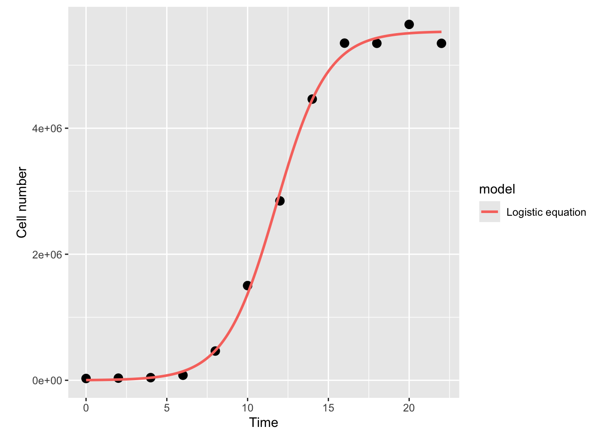
That looks nice, and the r_{max} estimate we get (0.64) is fairly close to what we got above with OLS fitting.
Note that we’ve done this fitting to the original non transformed data, whilst the linear regressions earlier were on log transformed data. What would this function look like on a log-transformed axis?
ggplot(data, aes(x = Time, y = LogN)) +
geom_point(size = 3) +
geom_line(data = df1, aes(x = Time, y = log(N), col = model), size = 1) +
theme(aspect.ratio=1)+
labs(x = "Time", y = "log(Cell number)")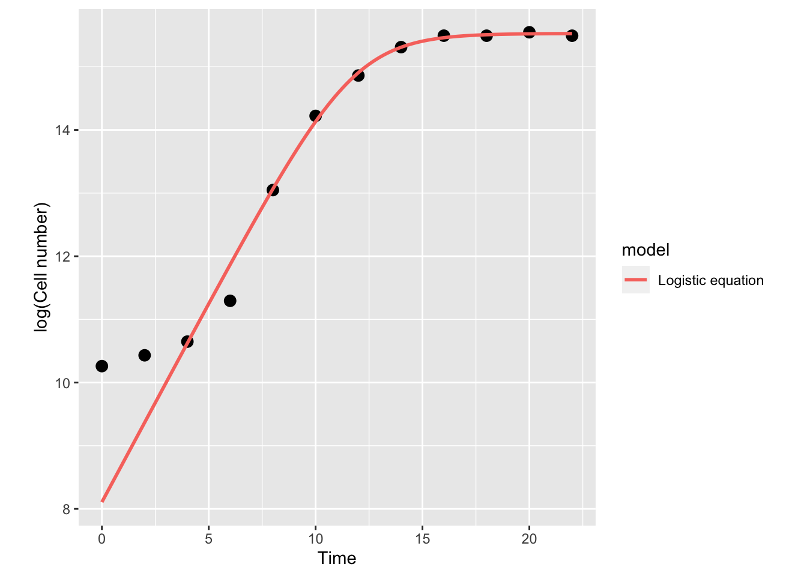
The model actually diverges from the data at the lower end! This was not visible in the previous plot where you examined the model in linear scale (without taking a log) because the deviation of the model is small, and only becomes clear in the log scale. This is because of the way logarithms work. Let’s have a look at this in our Cell counts “data”:
ggplot(data, aes(x = N, y = LogN)) +
geom_point(size = 3) +
theme(aspect.ratio = 1)+
labs(x = "N", y = "log(N)")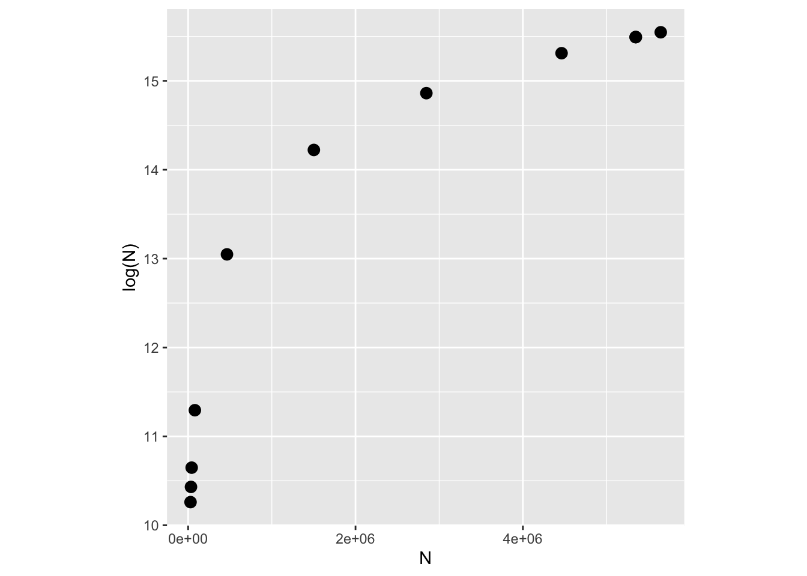
As you can see the logarithm is a strongly nonlinear transformation of any sequence of real numbers, with small numbers close to zero yielding disproportionately large deviations.
You may play with increasing the error (by increasing the value of `sd` in synthetic data generation step above) and re-evaluating all the subsequent model fitting steps above. However, note that above some values of `sd`, you will start to get negative values of populations, especially at early time points, which will raise issues with taking a logarithm.The above seen deviation of the Logistic model from the data is because this model assumes that the population is growing right from the start (Time = 0), while in “reality” (in our synthetic “data”), this is not what’s happening; the population takes a while to grow truly exponentially (i.e., there is a time lag in the population growth). This time lag is seen frequently in the lab, and is also expected in nature, because when bacteria encounter fresh growth media (in the lab) or a new resource/environment (in the field), they take some time to acclimate, activating genes involved in nutrient uptake and metabolic processes, before beginning exponential growth. This is called the lag phase and can be seen in our example data where exponential growth doesn’t properly begin until around the 4th hour.
To capture the lag phase, more complicated bacterial growth models have been designed.
One of these is the modified Gompertz model (Zwietering et. al., 1990), which has been used frequently in the literature to model bacterial growth:
\log(N_t) = N_0 + (N_{max} - N_0) e^{-e^{r_{max} \exp(1) \frac{t_{lag} - t}{(N_{max} - N_0) \log(10)} + 1}}
Here maximum growth rate (r_{max}) is the tangent to the inflection point, t_{lag} is the x-axis intercept to this tangent (duration of the delay before the population starts growing exponentially) and \log\left(\frac{N_{max}}{N_0}\right) is the asymptote of the log-transformed population growth trajectory, i.e., the log ratio of maximum population density N_{max} (aka “carrying capacity”) and initial cell (Population) N_0 density.
Note that unlike the Logistic growth model above, the Gompertz model is in the log scale. This is because the model is not derived from a differential equation, but was designed * specifically * to be fitted to log-transformed data.Now let’s fit and compare the two alternative nonlinear growth models: Logistic and Gompertz.
First, specify the function object for the Gompertz model (we already defined the function for the Logistic model above):
gompertz_model <- function(t, r_max, K, N_0, t_lag){ # Modified gompertz growth model (Zwietering 1990)
return(N_0 + (K - N_0) * exp(-exp(r_max * exp(1) * (t_lag - t)/((K - N_0) * log(10)) + 1)))
} Again, note that unlike the Logistic growth function above, this function has been written in the log scale.
Now let’s generate some starting values for the NLLS fitting of the Gompertz model.
As we did above for the logistic equation, let’s derive the starting values by using the actual data:
N_0_start <- min(data$LogN) # lowest population size, note log scale
K_start <- max(data$LogN) # highest population size, note log scale
r_max_start <- 0.62 # use our previous estimate from the OLS fitting from above
t_lag_start <- data$Time[which.max(diff(diff(data$LogN)))] # find last timepoint of lag phase- So how did we find a reasonable time lag from the data? *
Let’s break the last command down:
diff(data$LogN) # same as what we did above - get differentials [1] 0.171269154 0.216670872 0.646099643 1.753448393 1.174704941
[6] 0.639023868 0.449529740 0.181493482 -0.000450184 0.054490710
[11] -0.054600924diff(diff(data$LogN)) # get the differentials of the differentials (approx 2nd order derivatives) [1] 0.04540172 0.42942877 1.10734875 -0.57874345 -0.53568107 -0.18949413
[7] -0.26803626 -0.18194367 0.05494089 -0.10909163which.max(diff(diff(data$LogN))) # find the timepoint where this 2nd order derivative really takes off [1] 3data$Time[which.max(diff(diff(data$LogN)))] # This then is a good guess for the last timepoint of the lag phase[1] 4Now fit the model using these start values:
fit_gompertz <- nlsLM(LogN ~ gompertz_model(t = Time, r_max, K, N_0, t_lag), data,
list(t_lag=t_lag_start, r_max=r_max_start, N_0 = N_0_start, K = K_start))You might one or more warning(s) that the model fitting iterations generated NaNs during the fitting procedure for these data (because at some point the NLLS fitting algorithm “wandered” to a combination of K and N_0 values that yields a NaN for log(K/N_0)).
You can ignore these warning in this case. But not always – sometimes these NaNs mean that the equation is wrongly written, or that it generates NaNs across the whole range of the x-values, in which case the model is inappropriate for these data.
Get the model summary:
summary(fit_gompertz)
Formula: LogN ~ gompertz_model(t = Time, r_max, K, N_0, t_lag)
Parameters:
Estimate Std. Error t value Pr(>|t|)
t_lag 4.80680 0.18433 26.08 5.02e-09 ***
r_max 1.86616 0.08749 21.33 2.45e-08 ***
N_0 10.39142 0.05998 173.24 1.38e-15 ***
K 15.54956 0.05056 307.57 < 2e-16 ***
---
Signif. codes: 0 '***' 0.001 '**' 0.01 '*' 0.05 '.' 0.1 ' ' 1
Residual standard error: 0.09418 on 8 degrees of freedom
Number of iterations to convergence: 10
Achieved convergence tolerance: 1.49e-08And see how the fits of the two nonlinear models compare:
timepoints <- seq(0, 24, 0.1)
logistic_points <- log(logistic_model(t = timepoints,
r_max = coef(fit_logistic)["r_max"],
K = coef(fit_logistic)["K"],
N_0 = coef(fit_logistic)["N_0"]))
gompertz_points <- gompertz_model(t = timepoints,
r_max = coef(fit_gompertz)["r_max"],
K = coef(fit_gompertz)["K"],
N_0 = coef(fit_gompertz)["N_0"],
t_lag = coef(fit_gompertz)["t_lag"])
df1 <- data.frame(timepoints, logistic_points)
df1$model <- "Logistic model"
names(df1) <- c("Time", "LogN", "model")
df2 <- data.frame(timepoints, gompertz_points)
df2$model <- "Gompertz model"
names(df2) <- c("Time", "LogN", "model")
model_frame <- rbind(df1, df2)
ggplot(data, aes(x = Time, y = LogN)) +
geom_point(size = 3) +
geom_line(data = model_frame, aes(x = Time, y = LogN, col = model), size = 1) +
theme_bw() + # make the background white
theme(aspect.ratio=1)+ # make the plot square
labs(x = "Time", y = "log(Abundance)")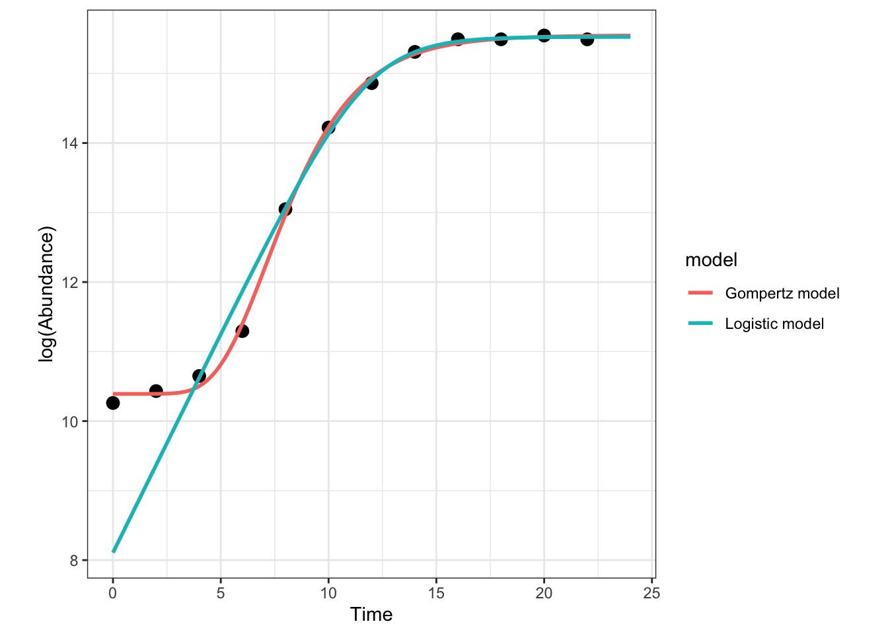
Clearly, the Gompertz model fits way better than the logistic growth equation in this case! Note also that there is a big difference in the fitted value of r_{max} from the two models; the value is much lower from the Logistic model because it ignores the lag phase, including it into the exponential growth phase.
You can now perform model selection like you did above in the allometric scaling example.
Some tips and tricks for NLLS fitting
Starting values
The main challenge for NLLS fitting is finding starting (initial) values for the parameters, which the algorithm needs to proceed with the fitting/optimization. Inappropriate starting values can result in the algorithm finding parameter combinations represent convergence to a local optimum rather than the (globally) optimal solution. Starting parameter estimates can also result in or complete “divergence”, i.e., the search results in a combination of parameters that cause mathematical “singularity” (e.g., log(0) or division by zero).
Obtaining them
Finding the starting values is a bit of an art. There is no method for finding starting values that works universally (across different types of models).
The one universal rule though, is that finding starting values requires you to understand the meaning of each of the parameters in your model.
Furthermore, you will typically need to determine starting values specific to each model and each dataset that that you are wanting to fit that model to. To do so, understanding how each parameter in the model corresponds to features of the actual data is really necessary.
For example, in the Gompertz population growth rate model (eqn. {eq}eq:Gompertz), your starting values generator function would, for each dataset,
* Calculate a starting value for r_{max} by searching for the steepest slope of the growth curve (e.g., with a rolling OLS regression) * Calculate a starting value of t_{lag} by intersecting the fitted line with the x (time)-axis * Calculate a starting value for the asymptote K as the highest data (abundance) value in the dataset.
Ideally, you should write a separate a function that calculates starting values for the model parameters.Sampling them
Once you have worked out how to generate starting values for each non-linear model and dataset, a good next step for optimizing the fitting across multiple datasets (and thus maximize how many datasets are successfully fitted to the model) is to rerun fitting attempts multiple times, sampling each of the starting values (simultaneously) randomly (that is, randomly vary the set of starting values a bit each time). This sampling of starting values will increase the likelihood of the NLLS optimization algorithm finding a solution (optimal combination of parameters), and not getting stuck in a combination of parameters somewhere far away from that optimal solution.
In particular, * You can choose a Gaussian/Normal distribution if you have high confidence in mean value of parameter, or * You can uniform distribution if you have low confidence in the mean, but higher confidence in the range of values that the parameter can take. In both cases, the mean of the sampling distribution will be the starting value you inferred from the model and the data (previous section).
Furthermore, * Whichever distribution you choose (gaussian vs uniform), you will need to determine what range of values to restrict each parameter’s samples to. In the case of the normal distribution, this is determined by what standard deviation parameter (you choose), and in the case of the uniform distribution, this is determined by what lower and upper bound (you choose). Generally, a good approach is to set the bound to be some percent (say 5-10%) of the parameter’s (mean) starting value. In both cases the chosen range to restrict the sampling to would typically be some subset of the model’s parameter bounds (next section).
* How many times to re-run the fitting for a single dataset and model?* – this depends on how “difficult” the model is, and how much computational power you have.
You may also try and use a more sophisticated approach such as grid searching for varying your starting values randomly.
Bounding parameters revisited
At the start, we looked at an exampleof NLLS fitting where we bounded the parameters. It can be a good idea to restrict the range of values that the each of the model’s parameters can take during any one fitting/optimization run. To “bound” a parameter in this way means to give it upper and lower limits. By doing so, during one optimization/fitting (e.g., one call to nlsLM, to fit one model, to one dataset), the fitting algorithm does not allow a parameter to go outside some limits. This reduces the chances of the optimization getting stuck too far from the solution, or failing completely due to some mathematical singularity (e.g., log(0)).
The bounds are typically fixed for each parameter of a model at the level of the model (e.g., they do not change based on each dataset). For example, in the Gompertz model for growth rates (eqn. {eq}eq:Gompertz), you can limit the growth rate parameter to never be negative (the bounds would be [0,\infty]), or restrict it further to be some value between zero and an upper limit (say, 10) that you know organismal growth rates cannot exceed (the bounds would in this case would be [0,10]).
However, as we saw in the Michaelis-Menten model fitting example, bounding the parameters too much (excessively narrow ranges) can result in poor solutions because the algorithm cannot explore sufficient parameter space.
The values of the parameter bounds you choose, of course, may depend on the *units of measurement* of the data. For example, in [SI](https://en.wikipedia.org/wiki/International_System_of_Units), growth rates in the Logistic or Gompertz models would be in units of 1/X).Irrespective of which computer language the NLLS fitting algorithm is implemented in (nlsLM in R or lmfit in Python), the fitting command/method will have options for setting the parameter bounds. In particular,
For
nlsLMin R, look up https://www.rdocumentation.org/packages/minpack.lm/versions/1.2-1/topics/nlsLM (thelowerandupperarguments to the function).For
lmfitin Python, look up https://lmfit.github.io/lmfit-py/parameters.html (and in particular, https://lmfit.github.io/lmfit-py/parameters.html#lmfit.parameter.Parameter) (theminandmaxarguments).
Bounding the parameter values has nothing to do, per se, with sampling the starting values of each parameter, though if you choose to sample starting values (explained in previous section), you need to make sure that the samples don’t exceed the pre-set bounds (explained in this section).
Python's `lmfit` has an option to also internally vary the parameter. So by using a sampling approach as described in the previous section, *and* allowing the parameter to vary (note that `vary=True` is the default) within `lmfit`, you will be in essence be imposing sampling twice. This may or may not improve fitting performance – try it out both ways.rm(list=ls())
graphics.off()Now that we have the background requirements going, we can start using the rTPC package (keep in mind in order to load the rTPC package you will need to use:
# remotes::install_github("padpadpadpad/rTPC") ## to install rTPCLets look through the different models available!
#take a look at the different models available
get_model_names() [1] "beta_2012" "boatman_2017" "briere2_1999"
[4] "delong_2017" "deutsch_2008" "flinn_1991"
[7] "gaussian_1987" "hinshelwood_1947" "joehnk_2008"
[10] "johnsonlewin_1946" "kamykowski_1985" "lactin2_1995"
[13] "lrf_1991" "modifiedgaussian_2006" "oneill_1972"
[16] "pawar_2018" "quadratic_2008" "ratkowsky_1983"
[19] "rezende_2019" "sharpeschoolfull_1981" "sharpeschoolhigh_1981"
[22] "sharpeschoollow_1981" "spain_1982" "thomas_2012"
[25] "thomas_2017" "weibull_1995" There are 24 models to choose from. For our purposes in this section we will be using the sharpesschoolhigh_1981 model. More information on the model can be found here.
From here lets load in our data from the overall repository. This will be called csm7I.csv.
This is from the larger dataset reduced to a single trait. This data comes from the VectorBiTE database and so has unique IDs. We will use this to get our species and trait of interest isolated from the larger dataset. In this example we will be looking at Development Rate across temperatures for Aedes albopictus, which we can find an example of in csm7I.
require(tidyverse)
df <- read_csv("activities/data/csm7I.csv")New names:
Rows: 11 Columns: 8
── Column specification
──────────────────────────────────────────────────────── Delimiter: "," chr
(5): originalid, originaltraitname, originaltraitunit, interactor1, cita... dbl
(3): ...1, originaltraitvalue, ambienttemp
ℹ Use `spec()` to retrieve the full column specification for this data. ℹ
Specify the column types or set `show_col_types = FALSE` to quiet this message.
• `` -> `...1`df1 <- df %>%
dplyr::select('originalid', 'originaltraitname', 'originaltraitunit', 'originaltraitvalue', 'interactor1', 'ambienttemp', 'citation')
df2 <- as_tibble(df1)Now lets visualize our data in ggplot.
#visualize
ggplot(df2, aes(ambienttemp, originaltraitvalue))+
geom_point()+
theme_bw(base_size = 12) +
labs(x = 'Temperature (ºC)',
y = 'Development Rate',
title = 'Development rate across temperatures for Aedes albopictus')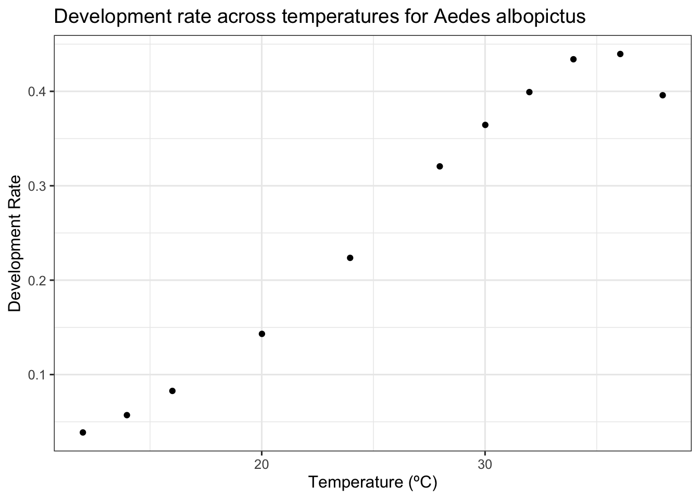
We will need to write which model we are using (sharpschoolhigh_1981). From here we can actually build our fit. We will use ‘’nls_multstart’’ to automatically find our starting values. This lets us skip the starting value problem. From here we build our predicted line.
# choose model
mod = 'sharpschoolhigh_1981'
d<- df2 %>%
rename(temp = ambienttemp,
rate = originaltraitvalue)# fit Sharpe-Schoolfield model
d_fit <- nest(d, data = c(temp, rate)) %>%
mutate(sharpeschoolhigh = map(data, ~nls_multstart(rate~sharpeschoolhigh_1981(temp = temp, r_tref,e,eh,th, tref = 15),
data = .x,
iter = c(3,3,3,3),
start_lower = get_start_vals(.x$temp, .x$rate, model_name = 'sharpeschoolhigh_1981') - 10,
start_upper = get_start_vals(.x$temp, .x$rate, model_name = 'sharpeschoolhigh_1981') + 10,
lower = get_lower_lims(.x$temp, .x$rate, model_name = 'sharpeschoolhigh_1981'),
upper = get_upper_lims(.x$temp, .x$rate, model_name = 'sharpeschoolhigh_1981'),
supp_errors = 'Y',
convergence_count = FALSE)),
# create new temperature data
new_data = map(data, ~tibble(temp = seq(min(.x$temp), max(.x$temp), length.out = 100))),
# predict over that data,
preds = map2(sharpeschoolhigh, new_data, ~augment(.x, newdata = .y)))# unnest predictions
d_preds <- dplyr::select(d_fit, preds) %>%
unnest(preds)Lets visualize the line:
# plot data and predictions
ggplot() +
geom_line(aes(temp, .fitted), d_preds, col = 'blue') +
geom_point(aes(temp, rate), d, size = 2, alpha = 0.5) +
theme_bw(base_size = 12) +
labs(x = 'Temperature (ºC)',
y = 'Growth rate',
title = 'Growth rate across temperatures')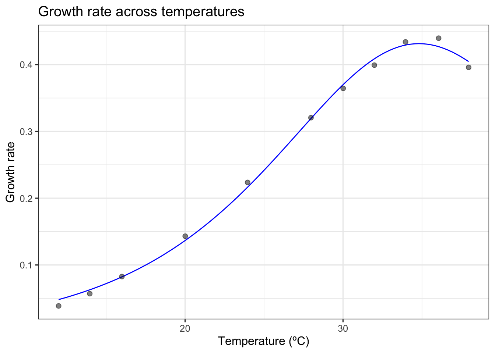
This looks like a good fit! We can start exploring using bootstrapping. Lets start with refitting the model using nlsLM.
# refit model using nlsLM
fit_nlsLM <- minpack.lm::nlsLM(rate~sharpeschoolhigh_1981(temp = temp, r_tref,e,eh,th, tref = 15),
data = d,
start = coef(d_fit$sharpeschoolhigh[[1]]),
lower = get_lower_lims(d$temp, d$rate, model_name = 'sharpeschoolhigh_1981'),
upper = get_upper_lims(d$temp, d$rate, model_name = 'sharpeschoolhigh_1981'),
weights = rep(1, times = nrow(d)))Now we can actually bootstrap.
# bootstrap using case resampling
boot1 <- Boot(fit_nlsLM, method = 'case')Warning in nls.lm(par = start, fn = FCT, jac = jac, control = control, lower = lower, : lmdif: info = -1. Number of iterations has reached `maxiter' == 50.It is a good idea to explore the data again now.
# look at the data
head(boot1$t) r_tref e eh th
[1,] 0.07156528 1.127725 1.569427 31.16678
[2,] 0.07428071 1.101990 1.460402 31.08500
[3,] 0.08116097 0.836633 2.145525 36.54408
[4,] 0.07897508 1.344105 1.338908 25.50450
[5,] 0.07328032 1.179788 1.422640 29.40599
[6,] 0.07039726 1.107672 1.653070 31.40087hist(boot1, layout = c(2,2))Warning in norm.inter(t, adj.alpha): extreme order statistics used as endpoints
Warning in norm.inter(t, adj.alpha): extreme order statistics used as endpoints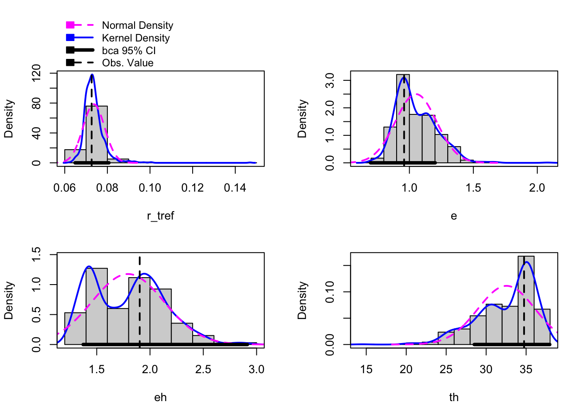
Now we use the bootstrapped model to build predictions which we can explore visually.
# create predictions of each bootstrapped model
boot1_preds <- boot1$t %>%
as.data.frame() %>%
drop_na() %>%
mutate(iter = 1:n()) %>%
group_by_all() %>%
do(data.frame(temp = seq(min(d$temp), max(d$temp), length.out = 100))) %>%
ungroup() %>%
mutate(pred = sharpeschoolhigh_1981(temp, r_tref, e, eh, th, tref = 15))# calculate bootstrapped confidence intervals
boot1_conf_preds <- group_by(boot1_preds, temp) %>%
summarise(conf_lower = quantile(pred, 0.025),
conf_upper = quantile(pred, 0.975)) %>%
ungroup()# plot bootstrapped CIs
p1 <- ggplot() +
geom_line(aes(temp, .fitted), d_preds, col = 'blue') +
geom_ribbon(aes(temp, ymin = conf_lower, ymax = conf_upper), boot1_conf_preds, fill = 'blue', alpha = 0.3) +
geom_point(aes(temp, rate), d, size = 2, alpha = 0.5) +
theme_bw(base_size = 12) +
labs(x = 'Temperature (ºC)',
y = 'Growth rate',
title = 'Growth rate across temperatures')
# plot bootstrapped predictions
p2 <- ggplot() +
geom_line(aes(temp, .fitted), d_preds, col = 'blue') +
geom_line(aes(temp, pred, group = iter), boot1_preds, col = 'blue', alpha = 0.007) +
geom_point(aes(temp, rate), d, size = 2, alpha = 0.5) +
theme_bw(base_size = 12) +
labs(x = 'Temperature (ºC)',
y = 'Growth rate',
title = 'Growth rate across temperatures')p1 + p2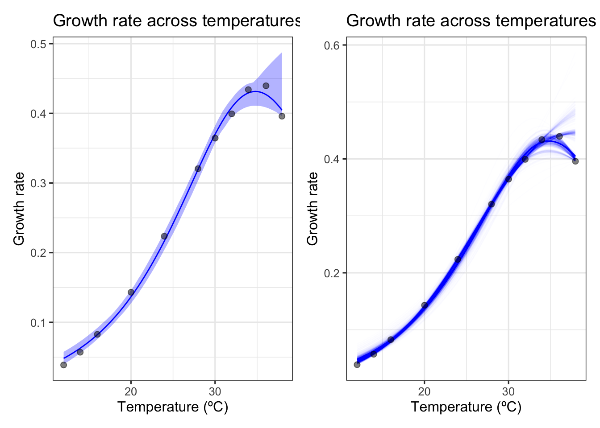
We can see here that when we bootstrap this data, the fit is not as good as we would expect from the initial exploration. We do not necessarily get a good thermal optima from this data with confidence intervals from this data.
Lets look at a second example:
Example: Aedes aegypti Juvenile Mortality Rate
Juvenile mortality and development are important traits for population growth (r_{max}), particularly in organisms with complex life histories, such as arthropods(Cator et al (2020); Huxley et al. 2021). The thermal optima of these functional traits can provide important insights into the suitability of environmental conditions for a species’ establishment and persistence. This information is particularly important when predicting environmental suitability for the establishment of disease vectors, such as Aedes aegypti.
For this example, we will use a dataset from VectorBiTE juvenilemortalityrateae.csv.
Lets start by loading the dataset and getting set up.
rm(list=ls())
graphics.off()
ae.ae <- read_csv('activities/data/juvenilemortalityrateae.csv')New names:
Rows: 55 Columns: 10
── Column specification
──────────────────────────────────────────────────────── Delimiter: "," chr
(6): originaltraitname, originaltraitunit, standardisedtraitname, standa... dbl
(4): ...1, originaltraitvalue, standardisedtraitvalue, temp
ℹ Use `spec()` to retrieve the full column specification for this data. ℹ
Specify the column types or set `show_col_types = FALSE` to quiet this message.
• `` -> `...1`We will need to manipulate this one a bit to get at the data we want.
Let’s subset the data by filtering by trait:
ae.zj <- ae.ae %>% filter(standardisedtraitname == "Juvenile Mortality Rate")
ae.zj <- ae.zj %>% dplyr::select(standardisedtraitvalue,temp)
ae.zj <- ae.zj %>% rename(rate = standardisedtraitvalue)Time to visualize!
plot(ae.zj$temp, ae.zj$rate)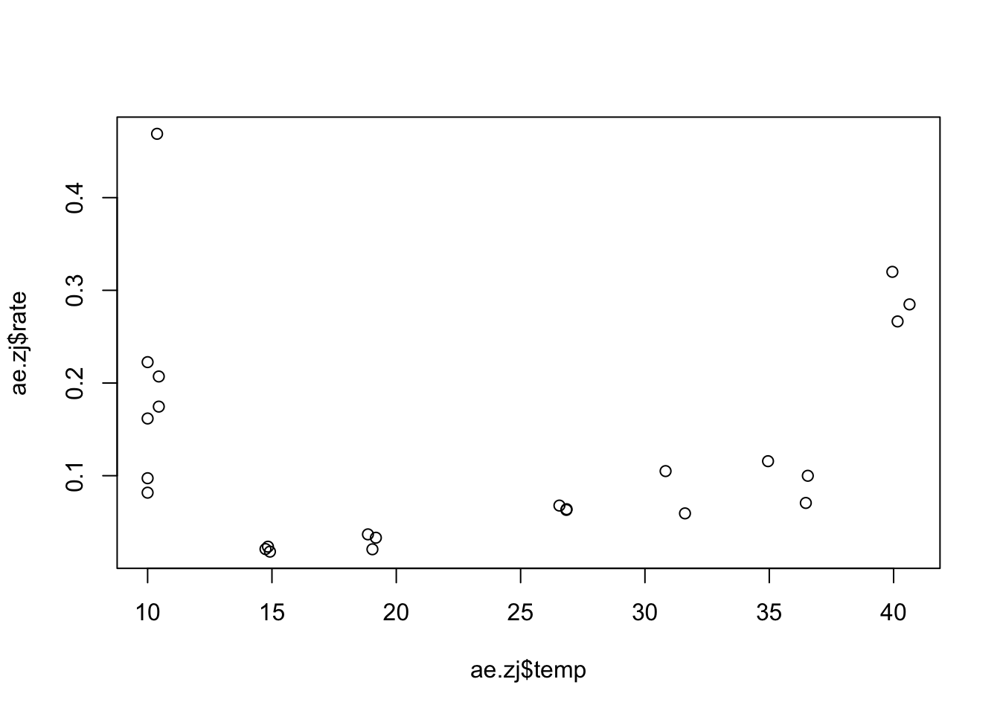
This doesn’t look good. In order to fit the rTPC models to a mortality rate we will need to invert either the model or the data. It is easiest to invert the data so we will use the following code:
ae.zj$rate <- 1/ae.zj$rateplot(ae.zj$temp, ae.zj$rate)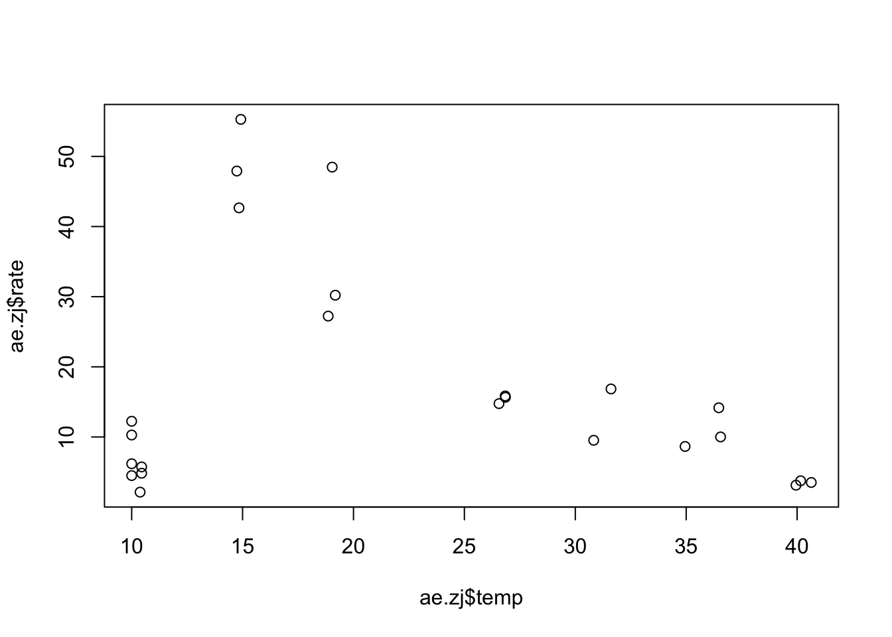
This is better! We can fit a curve to this data and decide a thermal optima. We need to start with the start values.
start_vals <- get_start_vals(ae.zj$temp, ae.zj$rate, model_name = 'pawar_2018')Now we fit the model to the data.
a_fits <- nest(ae.zj, data = c(temp, rate)) %>%
mutate(pawar = map(data, ~nls_multstart(rate~pawar_2018(temp = temp, r_tref,e,eh,topt, tref = 15),
data = .x,
iter = c(3,3,3,3),
start_lower = start_vals - 10,
start_upper = start_vals + 10,
supp_errors = 'Y',
convergence_count = FALSE)))We’ll need to build predictions:
a_preds <- mutate(a_fits, new_data = map(data, ~tibble(temp = seq(min(.x$temp), max(.x$temp), length.out = 100))))%>%
# get rid of original data column
dplyr::select(., -data) %>%
# stack models into a single column, with an id column for model_name
pivot_longer(., names_to = 'model_name', values_to = 'fit', c(pawar)) %>%
# create new list column containing the predictions
# this uses both fit and new_data list columns
mutate(preds = map2(fit, new_data, ~augment(.x, newdata = .y))) %>%
# select only the columns we want to keep
dplyr::select(model_name, preds) %>%
# unlist the preds list column
unnest(preds)And plot those predictions to the data.
ggplot(a_preds) +
geom_line(aes(temp, .fitted, col = model_name)) +
geom_point(aes(temp, rate),size=0.2,alpha=0.5, ae.zj)+
theme_bw() +
theme(legend.position = 'none') +
scale_color_brewer(type = 'qual', palette = 2) +
labs(x = 'Temperature (°C)',
y = 'rate',
title = 'Dev rate thermal performance curves')+
theme_bw(base_size = 10)+
theme(legend.position = "none")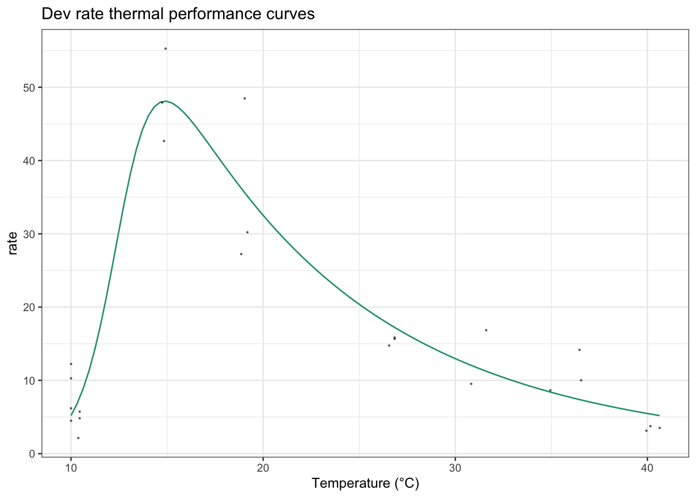
Looking good! Now let’s use the model to generate 95% confidence bounds for the model predictions.
fit_nlsLM2 <- minpack.lm::nlsLM(rate~pawar_2018(temp = temp, r_tref,e,eh,topt, tref = 15),
data = ae.zj,
start = coef(a_fits$pawar[[1]]),
weights = rep(1, times = nrow(ae.zj)))# bootstrap using case resampling
boot2 <- Boot(fit_nlsLM2, method = 'residual')Warning in nls.lm(par = start, fn = FCT, jac = jac, control = control, lower = lower, : lmdif: info = -1. Number of iterations has reached `maxiter' == 50.boot2_preds <- boot2$t %>%
as.data.frame() %>%
drop_na() %>%
mutate(iter = 1:n()) %>%
group_by_all() %>%
do(data.frame(temp = seq(min(ae.zj$temp), max(ae.zj$temp), length.out = 100))) %>%
ungroup() %>%
mutate(pred = pawar_2018(temp, r_tref, e, eh, topt, tref = 15))# calculate bootstrapped confidence intervals
boot2_conf_preds <- group_by(boot2_preds, temp) %>%
summarise(conf_lower = quantile(pred, 0.025),
conf_upper = quantile(pred, 0.975)) %>%
ungroup()# plot bootstrapped CIs
ggplot() +
geom_line(aes(temp, .fitted), a_preds, col = 'blue') +
geom_ribbon(aes(temp, ymin = conf_lower, ymax = conf_upper), boot2_conf_preds, fill = 'blue', alpha = 0.3) +
geom_point(aes(temp, rate), ae.zj, size = 2, alpha = 0.5) +
theme_bw(base_size = 12) +
labs(x = 'Temperature (°C)',
y = '1/zj')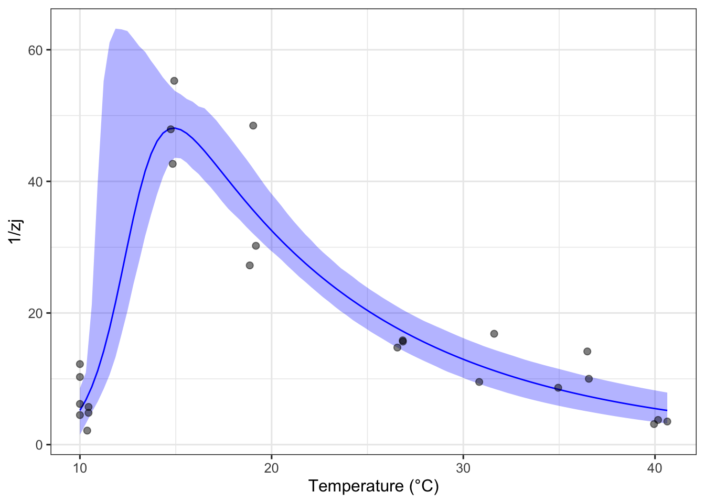
We can see on this plot, it looks like we will actually get an upper and lower confidence interval! If we eye the plot as it is we can see that the thermal optima will probably land around 15-16 degrees celcius but lets find it specifically.
# calculate params with CIs
extra_params2 <- calc_params(fit_nlsLM2) %>%
pivot_longer(everything(), names_to = 'param', values_to = 'estimate')ci_extra_params2 <- Boot(fit_nlsLM2, f = function(x){unlist(calc_params(x))},
labels = names(calc_params(fit_nlsLM2)), R = 200, method = 'residual') %>%
confint(., method = 'bca') %>%
as.data.frame() %>%
rename(conf_lower = 1, conf_upper = 2) %>%
rownames_to_column(., var = 'param') %>%
mutate(method = 'residual bootstrap')
Number of bootstraps was 0 out of 200 attempted Warning in norm.inter(t, adj.alpha): extreme order statistics used as endpointsci_extra_params2 <- left_join(ci_extra_params2, extra_params2)Joining with `by = join_by(param)`It’s okay to get a warning here the code is still working fine and we will get good findings.
#- Topt
topt2 <- as_tibble(ci_extra_params2[2,])
topt2$species <- as.character("Aedes aegypti")Let’s look at the results!
ggplot(topt2, aes(estimate, species)) +
geom_point(size = 4) +
geom_linerange(aes(xmin = conf_lower, xmax = conf_upper)) +
theme_bw(base_size = 12) +
scale_x_continuous('') +
labs(title = 'calculation of Topt with CIs',
subtitle = 'dev rate TPC; using residual resampling')+
theme(axis.title.y = element_blank())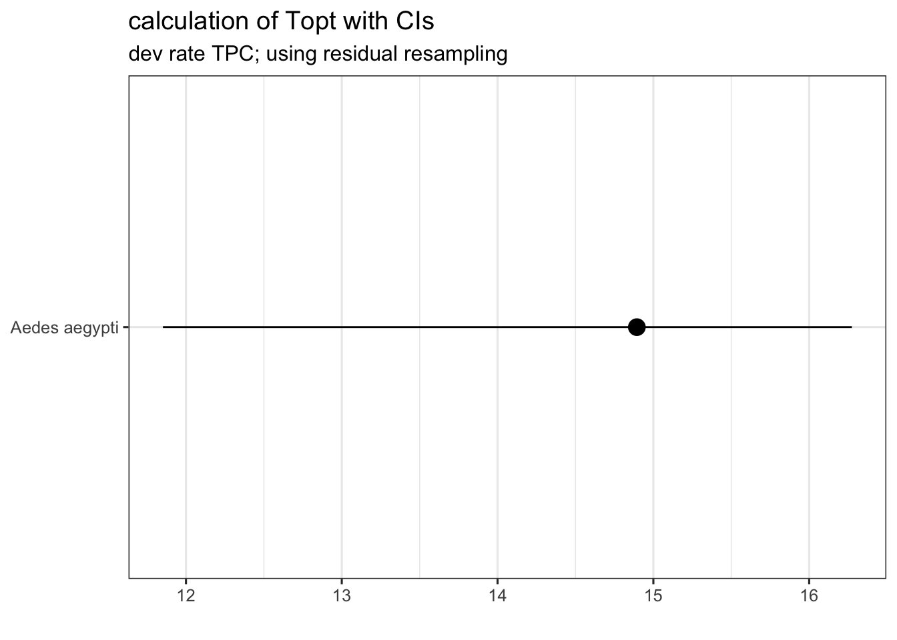
This looks good, we have now have the estimated thermal optimum for juvenile mortality rate with 95% confidence bounds! In other words, our model predicts that juvenile survival in Ae. aegypti is highest when environmental temperatures range between 12°C and 16°C.
Please see Daniel Padfields git for more information on using the rTPC package.
Readings and Resources
Motulsky, Harvey, and Arthur Christopoulos. Fitting models to biological data using linear and nonlinear regression: a practical guide to curve fitting. OUP USA, 2004: https://www.facm.ucl.ac.be/cooperation/Vietnam/WBI-Vietnam-October-2011/Modelling/RegressionBook.pdf
These are a pretty good series of notes on NLLS (even if you are using R instead of Python): https://lmfit.github.io/lmfit-py/intro.html
Another technical description of NLLS algorithms: https://www.gnu.org/software/gsl/doc/html/nls.html
Johnson, J. B. & Omland, K. S. 2004 Model selection in ecology and evolution. Trends Ecol. Evol. 19, 101–108.
The nlstools package for NLLS fit diagnostics: https://rdrr.io/rforge/nlstools
- The original paper: http://dx.doi.org/10.18637/jss.v066.i05